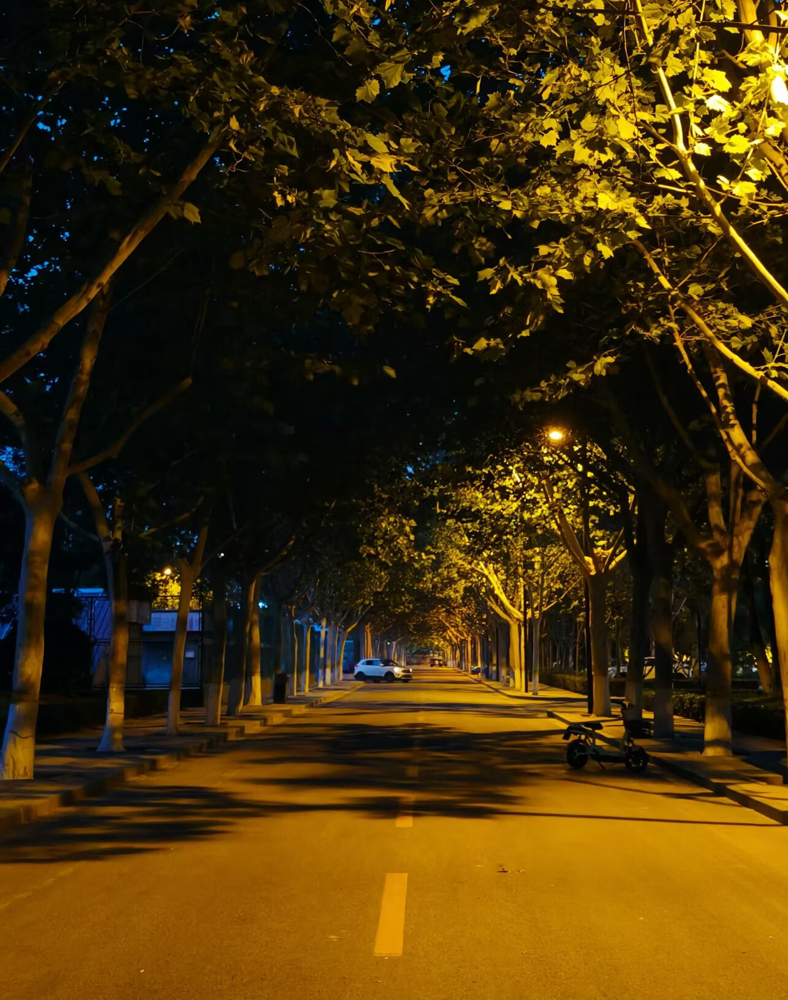
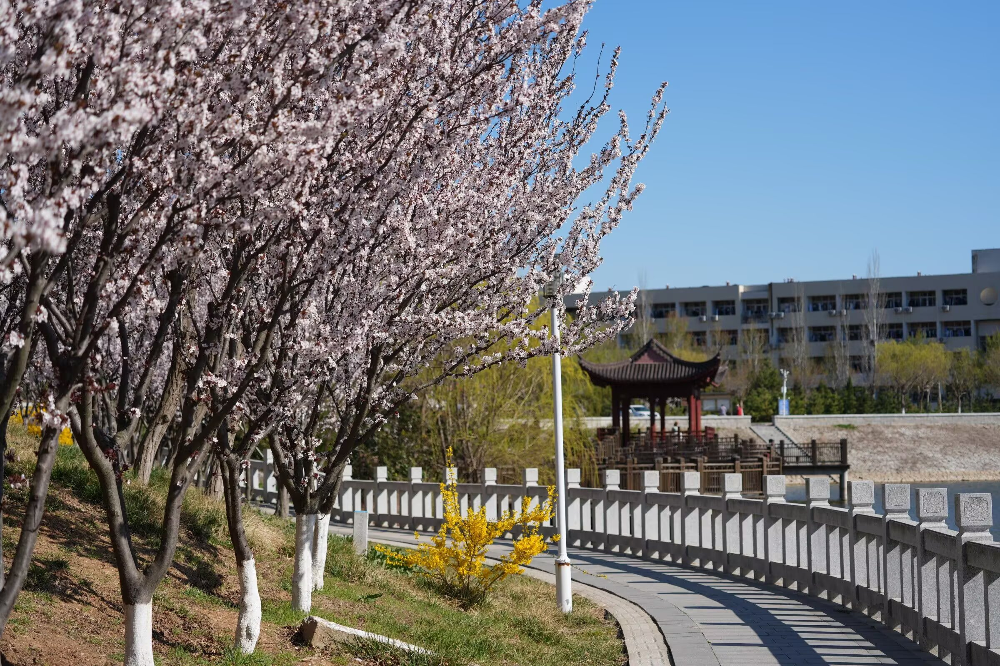
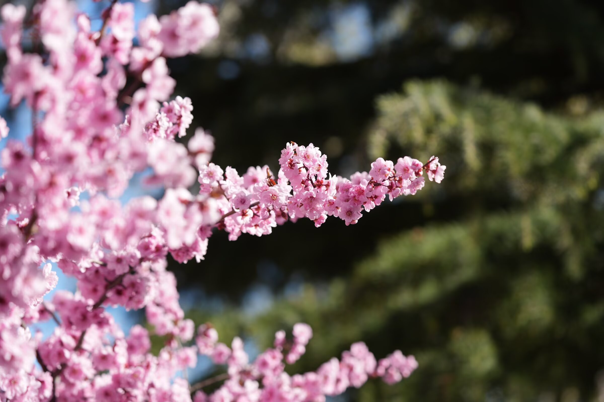

春风轻拂，鲁东大学的校园褪去了冬日的沉寂，处处洋溢着盎然生机，每一寸土地都被春日的温柔唤醒，每一缕风都裹挟着草木的清香。乳子湖畔碧波荡漾，清澈的湖水像一块温润的碧玉，映着湛蓝的天空、洁白的云朵，还有岸边错落有致的楼宇与绿植，偶有微风拂过，湖面泛起层层涟漪，将水中的倒影揉成一片温柔的碎光。岸边的垂柳抽出嫩绿的新芽，柔软的枝条垂至水面，随风轻舞，像是在与湖水低语呢喃，枝条上的嫩芽缀满细碎的绒毛，在阳光下泛着淡淡的光泽，格外惹人怜爱。校园里的樱花、玉兰、迎春竞相绽放，粉白的樱花缀满枝头，一簇簇、一团团，风一吹便下起浪漫的花雨，落在路过同学的肩头，落在青石板路上，也落在乳子湖的水面上，随波逐流，添了几分诗意；洁白的玉兰亭亭玉立，花瓣温润如玉，在春风中舒展身姿，散发着淡淡的幽香，路过的师生总会忍不住驻足，定格这春日的美好；嫩黄的迎春花缀满枝头，像一串串小喇叭，热烈地宣告着春天的到来，装点着校园的每一个角落。青草破土而出，铺满校园的小径与广场，嫩绿的色彩点缀着楼宇与湖畔，不知名的小野花星星点点，红的、黄的、紫的，藏在草丛间，格外灵动。鸟鸣声声入耳，清脆悦耳，像是春日的赞歌，阳光温暖和煦，透过梧桐的新叶，在地上洒下斑驳的光影，同学们或坐在长椅上读书，或三两成群散步聊天，青春的气息与春日的生机交融在一起，构成了校园里最动人的风景，让人心旷神怡，沉醉不已，也让人深深爱上这充满生机与温柔的鲁大春景。
鲁东大学的人文景观，承载着百年学府的深厚底蕴与浓郁的书香气息，与校园的自然风光交相辉映，构筑起独属于鲁大的精神家园，滋养着一代又一代鲁大学子。庄严肃穆的图书馆矗立在校园中心，红墙黛瓦，古朴典雅，成为无数学子求知问道的精神殿堂，馆内藏书万卷，墨香萦绕，书架上整齐排列的书籍，承载着知识与梦想，无论是清晨还是傍晚，总能看到学子们匆匆走进图书馆的身影，他们伏案苦读、潜心钻研，在知识的海洋中遨游，眼神里满是坚定与热爱。乳子湖周边的亭台小径、文化石碑，镌刻着校园的历史与传承，亭台古色古香，可供学子们休憩畅谈，闲暇时，同学们坐在亭中，伴着湖水的涟漪与草木的清香，交流学习心得、畅谈青春理想，氛围感十足；文化石碑上刻着励志的箴言与校园的校训，时刻激励着学子们奋发向上、笃行不怠。教学楼里书声琅琅，清脆的朗读声回荡在校园的每一个角落，那是学子们对知识的渴望，是青春最动人的旋律；实验楼中探索不息，计算机专业的学子们在实验室里敲击代码、调试程序，专注的神情彰显着严谨务实的治学态度，用专业能力追逐科技梦想；林荫道上青春洋溢，师生们步履坚定、意气风发，老师耐心答疑解惑，学子们虚心求教，邻里般的师生情谊温暖动人。这些独具特色的人文景致，不仅彰显着鲁大的文化底蕴，更传递着向上的力量，让每一位身处其中的学子，都能感受到浓厚的文化氛围与青春的朝气，在潜移默化中汲取成长的力量，不负韶华、逐梦前行。



© 2026 鲁东大学 美丽校园主题网页